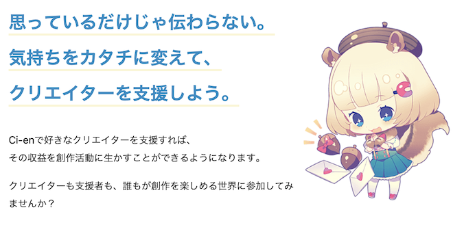
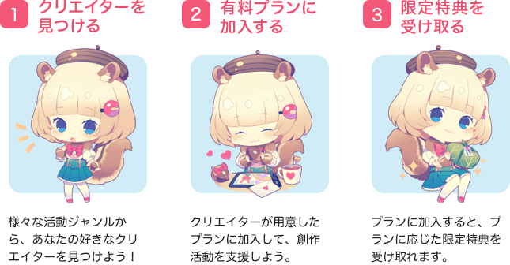
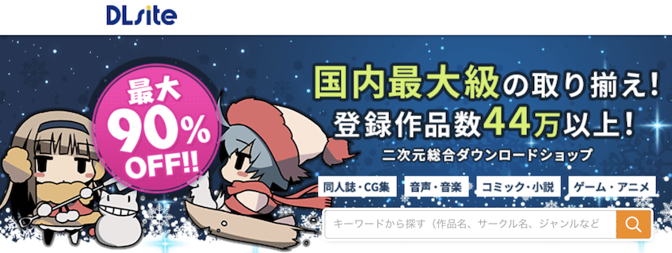
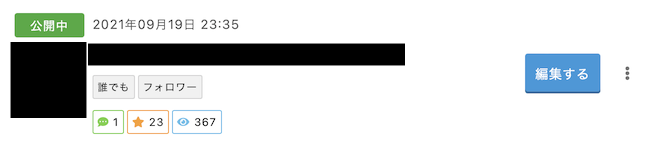
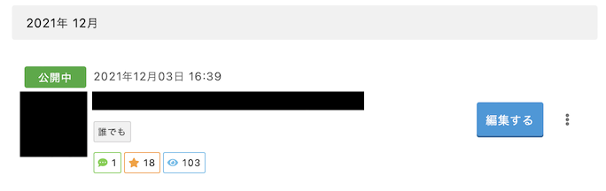

ゲーム開発ブログにCi-enを採用した理由
2021-12-04 09:15:37 +0900 JST
Categories: Game
ゲーム制作者が自由な記事を作るアドベントカレンダー 12/4の記事です！ https://adventar.org/calendars/6783
ゲーム開発中に開発ブログを書いている方はたくさんいらっしゃると思いますが、今日は私が開発中のゲームの開発ブログにCi-enを選んだ理由についてお話しします。
今回は開発ブログについて焦点をあてるため、製作中のゲームについての内容は含みません。
Ci-enとは
https://ci-en.dlsite.com/about/supporter

Ci-enはその名前のまま支援型のブログです。支援型とは通常のブログ形式に加えて投銭ができる機能を持ったものです。
例えば月額500円を継続的に投銭したり、特定の記事に対してチップのようなものを支払うことでクリエイターにお金を渡すことができます。
似たようなものにPixivのFANBOXやとらのあなのFantiaがあります。FANBOXなどはイラストに特化している一方でCi-enは幅広い創作活動をターゲットとしています。
投銭プランを用意する場合、たいていはリターンとしてプラン加入者限定のコンテンツを配ります。例えば限定イラストだったり、ゲームであれば先行体験版をDLできるリンクなどをリターンにしています。

なぜCi-enを選んだか
一番の決め手はゲーム販売のプラットフォームにDLSiteを選んだからです。
DLSiteは同人ゲームを扱っているプラットフォームとしては国内で一番でかい(DLSiteもそう主帳している)マーケットプレイスです。

このDLSiteとCi-enは運営している会社が一緒なため、セットで使うと相互に良いことがあります。例えばゲームの紹介ページに自動的にCi-enのリンクが貼られたり、またはその逆のリンクも用意されていたりします。またCi-enでクーポンを作成することで自分のゲームを割引させるといったこともできます。
もちろんお金をいただくことによるモチベーションアップや若干の開発費用回収も狙えるのでは？？と思いました。
では今度はなぜDLSiteを選んだかに深ぼっていきましょう。
なぜDLSiteを選んだか
製作中のゲームについての内容には触れないと言いましたが、前提として話しておきたいことがあるのでそこだけお話しします。
ソシャゲの中でめちゃくちゃハマったゲームがありまして、こんなゲームを自分でも作ってみたいな〜〜〜と思ったのがゲーム開発のきっかけでした。
ただゲームを作るからにはちゃんと売りたい！
ということで、開発費用が回収できるぐらい売る！という目標を立てました。
そこでまずターゲットをPCにしました。 理由はリスペクト元のゲームがソシャゲなため、スマホで出しても本家のほうが面白いのでそっちのほうが良いとなるのは当たり前だと思ったからです。
なのでPCゲームの販売サイトに載せてもらうためにDLSiteを候補としました。
もちろんDLSite以外にもPCゲーム販売サイトはあります。有名なのはDMMでしょうか。もちろんDMMとも比較をした結果、私はDLSiteを選びました。
- 表現の規制に関する注意事項がDMMと比べて相対的にゆるかった
- DMMは低価格帯での手数料がDLSiteと比較して高い
参考 - https://shirakamisauto.hatenablog.com/entry/2016/06/22/081727 - 発売後も多言語化やデバッグサポートなど、オプションでゲームを広げられそうと感じた
またゲーム専用ではないですが同人サークル販売に特化したBOOTHというサービスもあります。私が書いた技術書の薄い本の委託販売はこちらでお世話になっております🙇♀️
BOOTHは手数料が一番安いものの、サポート含め全て自己責任です。何より同人ゲームを買うか〜ってなった時にまずBOOTHは開かないと思ったので、今回の候補からは外れました。
Ci-enを使う時に気を付けること
ここからは実際に私がCi-enでブログを運用していて気づいたこと、気をつけなきゃと思ったことを書きます。
初めは新着サークルとして注目されやすいが、徐々にハイライトされるのが難しい
割と目に見えて、だんだん閲覧数が減ってきます。私が始めたのは今年の10月ですが、開設当初は新着クリエイターとしてハイライトされていたため、初回の記事では363もの閲覧数(Ci-enのシステムによる集計)があったのに対し、11/28に投稿した記事では103と1/3ほどに減っています。
開設当初

最新の記事

Ci-enではパーソナルリコメンド機能が弱く、強いサークルが常にランキング上位で注目され、それ以外のサークルはなかなか日の目を見ることが難しく感じます。
一番ベストなのは開設と同時にDLSiteでゲーム販売すること
ゲームをまだ出してないサークルのブログとゲーム発売済みのサークルのブログではフォロー数、いいね数ともに一回り違います。Ci-enではこの数でランキングされるため、純粋に強いサークルがハイライトされ続ける仕組みになっています。
またCi-enで投銭しようとする時の判断基準として、このサークルは自分に見合ったリターンを継続的に出してくれるかが気になると思います。特にゲームとなれば自分の好みのジャンルかどうかも重要です。
まだゲームを出していないサークルと販売済みのサークルでは安心感が違ってくるでしょう。
ゲーム次第にもなりますが、かわいい女の子をヘッダーや記事のサムネにおけるかどうかで初動はかなり変わると思います。
有償プランはしっかりとリターンを設計すること
当然といえば当然ですが、これは有償プランの設計に非常に重要な観点です。
まずなんのリターンもなしにプランに加入してくれる人がいるとは思わないでください。自分が投銭する側になって考えれば当然のことです。
では何をリターンにするかという話になりますが、望ましいのは 低コストで継続的に提供できるもの になります。なぜかというとプランは月額制のため、常にプランに加入し続けてもらうには最低でも月に1回以上はリターンを提供する必要があるからです。
特に問題になってくるのはリターンに 自分一人では作れないもの を指定してしまう場合です。自分一人で生み出せるものは最低限材料費のみで済みますし、自分の時間だけをうまく捻出すれば継続的なリターンが可能です。しかし自分一人では作れないものにしてしまうとこれらの制御がとても難しくなります。
特に自分一人では作れないものとなるとコストの鶏卵問題が発生します。
プランで得られた資金をもとにリターンを提供したいと考えます。この時N人以上がプランに加入することでリターンが提供できるとなった場合、N人未満しか集まらなかった時にリターンが提供できなくなります。
そうなると先にコストを用意する必要がありそうですが、ではそのコストはどこから捻出するのか、そして結局N人以上加入してくれるかはまた別の問題となってしまいます。
なのでリターンには例え加入者が1人でも100人でも同じコストで提供できるものが望ましいです。
PixivのFANBOXでは最初からイラストに特化しているため基本的にはリターンはそのクリエイターの限定イラストになります。当然そのクリエイターが自ら製作するわけですから上記の問題は発生しません。
しかし例えば私のようなゲーム開発しかできないエンジニアがCi-enでリターンを用意しようとなると話は別です。エンジニアが読者の望む限定コンテンツを月1回以上配る？？？？どういうこと？？？となってしまいます。
なので自分も実はまだ有償プランを開始できていません……。
まとめ
イラスト系だと流石にFANBOXやFantiaに軍配が上がりそうだが、それ以外で支援型ブログの開設を考えている人はCi-enおすすめだと思います！
使われないとは思いますが…..招待コードを貼り付けておきます。
KbEDyhC7VzahdyH
これを使うと有償プランの手数料が割引されます。